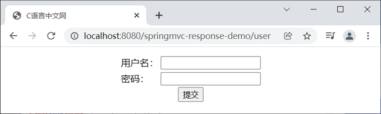
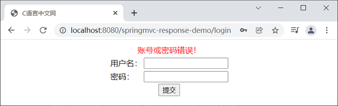
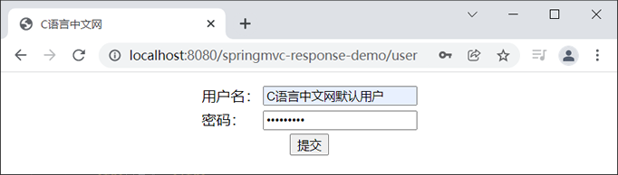
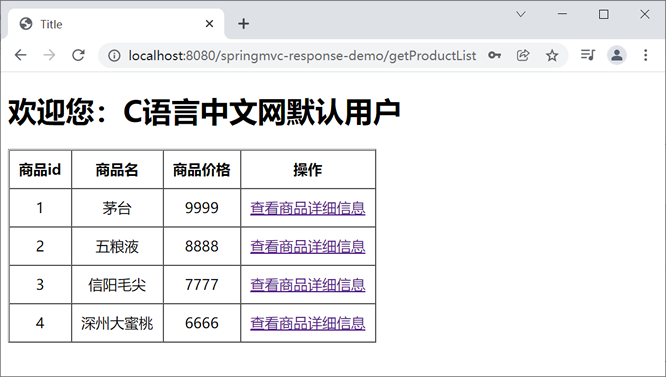
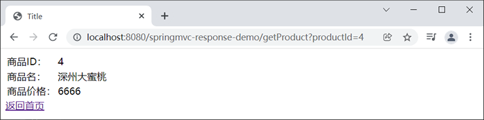

首页 > Spring MVC
Spring MVC域对象共享数据
在 Spring MVC 中，控制器在接收到 DispatcherServlet 分发过来的请求后，会继续调用 Model 层对请求进行处理。Model 层处理完请求后的结果被称为模型数据，会将模型数据返回给 Controller。Controller 在接收到 Model 层返回的模型数据后，下一步就是将模型数据通过域对象共享的方式传递给 View 视图进行渲染，最终返回给客户端展示。
下面我们就一一对这几种域对象共享数据的方式进行介绍。
由于这种方式是通过原生 Servlet API 实现的，会导致控制器与 Servlet 容器耦合度过高，因此通常情况下，我们不推荐使用这种方式向 request 域对象中共享数据。
ModelAndView 为我们提供了多种方法，其中常用的方法如下表。
在 Controller 类中，ModelAndView 只有在作为控制器方法的返回值，返回给前端控制器（DispatcherServlet）时，前端控制器解析才会去解析它，示例代码如下。
1. 新建一个名为 springmvc-response-demo 的 Web 项目，并将 Spring MVC 相关的依赖引入到该项目中，web.xml 配置如下。
2. 在 src 下（类路径下）创建一个名为 springMVC.xml 的 Spring MVC 配置文件，配置内容如下。
3. 在 net.biancheng.c.entity 包下，创建一个名为 User 的实体类，代码如下。
4. 在 net.biancheng.c.entity 包下，创建一个名为 Product 的实体类，代码如下。
5. 在 net.biancheng.c.controller 包下，创建一个名为 LoginController 的 Controller 类，代码如下。
6. 在 net.biancheng.c.controller 包下，创建一个名为 ProductController 的 Controller 类，代码如下。
7. 在 net.biancheng.c.service 包下，创建一个名为 UserService 的接口，代码如下。
8. 在 net.biancheng.service.impl 包下，创建 UserService 接口的实现类 UserServiceImpl，代码如下。
9. 在 net.biancheng.c.service 包下，创建一个名为 ProductService 的接口，代码如下。
10. 在 net.biancheng.service.impl 包下，创建 ProductService 接口的实现类 ProductServiceImpl，代码如下。
11. 在 net.biancheng.c.dao 包下，创建一个名为 UserDao 的类，代码如下。
12. 在 net.biancheng.c.dao 包下，创建一个名为 ProductDao 的类，代码如下。
13. 在 webapp/WEB-INF 下新建一个 templates 目录，并在该目录下创建 user.html，代码如下。
14. 在 webapp/WEB-INF/templates 目录下，新建一个 productList.html，代码如下。
15. 在 webapp/WEB-INF/templates 目录下，新建一个 product.html，代码如下。
16. 将 springmvc-response-demo 部署到 Tomcate 服务器中，启动 Tomcat 服务器。使用浏览器访问“http://localhost:8080/springmvc-response-demo/user”，结果如下。
17. 分别输入错误的用户名和密码，结果如下图。
18. 在登录页中，分别输入用户名：C语言中文网默认用户，密码：123456789，如下图。
20. 点击“查看商品详细信息”，结果如下图。
Spring MVC 提供了多种域对象共享数据的方式，其中最常用的方式如下：域对象是服务器在内存上创建的一块存储空间，主要用不同动态资源之间的数据传递和数据共享。在 Spring MVC 中，常用的域对象有 request 域对象、session 域对象、application 域对象等。
- 使用 Servlet API 向 request 域对象中共享数据
- 使用 ModelAndView 向 request 域对象中共享数据
- 使用 Model 向 request 域对象中共享数据
- 使用 Map 向 request 域对象中共享数据
- 使用 ModelMap 向 request 域对象中共享数据
- 使用 Servlet API 向 session 域中共享数据
- 使用 Servlet API 向 application 域中共享数据
下面我们就一一对这几种域对象共享数据的方式进行介绍。
1. 使用 Servlet API 向 request 域对象中共享数据
我们可以在控制器方法中设置一个 HttpServletRequest 类型的形参。通过它，我们就可以将模型数据共享到 request 域对象中，示例代码如下。
@RequestMapping("/testServletAPI")
public String testServletAPI(HttpServletRequest request) {
request.setAttribute("testScope", "hello,Servet API");
return "success";
}
由于这种方式是通过原生 Servlet API 实现的，会导致控制器与 Servlet 容器耦合度过高，因此通常情况下，我们不推荐使用这种方式向 request 域对象中共享数据。
2. 使用 ModelAndView 向 request 域对象中共享数据
我们还可以通过 Spring 提供的 ModelAndView 向 reuqest 域对象中共享数据。ModelAndView 主要由 model（模型）和 view（视图）两部分组成。其中，model 负责数据共享，而 view 则主要用于设置视图，实现页面的跳转。ModelAndView 为我们提供了多种方法，其中常用的方法如下表。
| 方法 | 说明 |
|---|---|
| ModelAndView addObject(String attributeName, @Nullable Object attributeValue) | 添加模型数据 |
| ModelAndView addObject(Object attributeValue) | |
| ModelAndView addAllObjects(@Nullable Map<String, ?> modelMap) | |
| void setViewName(@Nullable String viewName) | 设置视图 |
| void setView(@Nullable View view) |
在 Controller 类中，ModelAndView 只有在作为控制器方法的返回值，返回给前端控制器（DispatcherServlet）时，前端控制器解析才会去解析它，示例代码如下。
@RequestMapping("/testModelAndView")
public ModelAndView testModelAndView() {
/**
* ModelAndView有Model和View的功能
* Model主要用于向请求域共享数据
* View主要用于设置视图，实现页面跳转
*/
ModelAndView mav = new ModelAndView();
//向请求域共享数据
mav.addObject("testScope", "hello,ModelAndView");
//设置视图，实现页面跳转
mav.setViewName("success");
return mav;
}
3. 使用 Model 向 request 域对象中共享数据
我们可以在 Controller 控制器方法中设置一个 Model 类型的形参。通过它，我们也可以向 request 域对象中共享数据，示例代码如下。
@RequestMapping("/testModel")
public String testModel(Model model) {
model.addAttribute("testScope", "hello,Model");
return "success";
}
4. 使用 Map 向 request 域对象中共享数据
我们可以在 Controller 控制器方法中设置一个 Map 类型的形参。通过它，我们也可以向 request 域对象中共享数据，示例代码如下。
@RequestMapping("/testMap")
public String testMap(Map<String, Object> map) {
map.put("testScope", "hello,Map");
return "success";
}
5. 使用 ModelMap 向 request 对象中共享数据
我们可以在 Controller 控制器方法中设置一个 ModelMap 类型的形参。通过它，我们也可以向 request 域对象中共享数据，示例代码如下。
@RequestMapping("/testModelMap")
public String testModelMap(ModelMap modelMap) {
modelMap.addAttribute("testScope", "hello,ModelMap");
return "success";
}
6. 使用 Servlet API 向 session 域对象中共享数据
我们可以在控制器方法中设置一个 HttpSession 类型的形参。通过它，我们就可以将数据共享到 session 域对象中，示例代码如下。
@RequestMapping("/testSession")
public String testSession(HttpSession session) {
session.setAttribute("testSessionScope", "hello,session");
return "success";
}
7. 使用 Servlet API 向 application 域对象中共享数据
我们可以在控制器方法中设置一个 HttpSession 类型的形参，并通过它获取到 application 域对象，最终我们就可以将数据共享到 application 域对象中，示例代码如下。
@RequestMapping("/testApplication")
public String testApplication(HttpSession session) {
ServletContext application = session.getServletContext();
application.setAttribute("testApplicationScope", "hello,application");
return "success";
}
示例
下面，我们就通过一个简单的案例，来演示下如何实现通过域对象中共享数据，将模型数据返回到 view 视图中。1. 新建一个名为 springmvc-response-demo 的 Web 项目，并将 Spring MVC 相关的依赖引入到该项目中，web.xml 配置如下。
<?xml version="1.0" encoding="UTF-8"?>
<web-app xmlns:xsi="http://www.w3.org/2001/XMLSchema-instance" xmlns="http://xmlns.jcp.org/xml/ns/javaee"
xsi:schemaLocation="http://xmlns.jcp.org/xml/ns/javaee http://xmlns.jcp.org/xml/ns/javaee/web-app_4_0.xsd"
id="WebApp_ID" version="4.0">
<display-name>first-springmvc-demo</display-name>
<!--请求和响应的字符串过滤器-->
<filter>
<filter-name>CharacterEncodingFilter</filter-name>
<filter-class>org.springframework.web.filter.CharacterEncodingFilter</filter-class>
<!--设置请求的编码-->
<init-param>
<param-name>encoding</param-name>
<param-value>UTF-8</param-value>
</init-param>
<!--设置响应的编码，这里我们可以省略-->
<init-param>
<param-name>forceResponseEncoding</param-name>
<param-value>true</param-value>
</init-param>
</filter>
<filter-mapping>
<filter-name>CharacterEncodingFilter</filter-name>
<url-pattern>/*</url-pattern>
</filter-mapping>
<!-- 配置SpringMVC的前端控制器，对浏览器发送的请求统一进行处理 -->
<servlet>
<servlet-name>dispatcherServlet</servlet-name>
<servlet-class>org.springframework.web.servlet.DispatcherServlet</servlet-class>
<!--配置 DispatcherServlet 的一个初始化参数：spring mvc 配置文件按的位置和名称-->
<init-param>
<param-name>contextConfigLocation</param-name>
<param-value>classpath:springMVC.xml</param-value>
</init-param>
<load-on-startup>1</load-on-startup>
</servlet>
<servlet-mapping>
<servlet-name>dispatcherServlet</servlet-name>
<!--设置springMVC的核心控制器所能处理的请求的请求路径/所匹配的请求可以是/login或.html或.js或.css方式的请求路径但是/不能匹配.jsp请求路径的请求-->
<url-pattern>/</url-pattern>
</servlet-mapping>
</web-app>
2. 在 src 下（类路径下）创建一个名为 springMVC.xml 的 Spring MVC 配置文件，配置内容如下。
<?xml version="1.0" encoding="UTF-8"?>
<beans xmlns="http://www.springframework.org/schema/beans"
xmlns:xsi="http://www.w3.org/2001/XMLSchema-instance"
xmlns:context="http://www.springframework.org/schema/context"
xmlns:mvc="http://www.springframework.org/schema/mvc"
xsi:schemaLocation="http://www.springframework.org/schema/beans
http://www.springframework.org/schema/beans/spring-beans.xsd
http://www.springframework.org/schema/context
https://www.springframework.org/schema/context/spring-context.xsd http://www.springframework.org/schema/mvc https://www.springframework.org/schema/mvc/spring-mvc.xsd">
<!--开启组件扫描-->
<context:component-scan base-package="net.biancheng.c"></context:component-scan>
<!-- 配置 Thymeleaf 视图解析器 -->
<bean id="viewResolver"
class="org.thymeleaf.spring5.view.ThymeleafViewResolver">
<property name="order" value="1"/>
<property name="characterEncoding" value="UTF-8"/>
<property name="templateEngine">
<bean class="org.thymeleaf.spring5.SpringTemplateEngine">
<property name="templateResolver">
<bean class="org.thymeleaf.spring5.templateresolver.SpringResourceTemplateResolver">
<!-- 视图前缀 -->
<property name="prefix" value="/WEB-INF/templates/"/>
<!-- 视图后缀 -->
<property name="suffix" value=".html"/>
<property name="templateMode" value="HTML5"/>
<property name="characterEncoding" value="UTF-8"/>
</bean>
</property>
</bean>
</property>
</bean>
</beans>
3. 在 net.biancheng.c.entity 包下，创建一个名为 User 的实体类，代码如下。
package net.biancheng.c.entity;
public class User {
private String userId;
private String userName;
private String password;
public String getUserId() {
return userId;
}
public void setUserId(String userId) {
this.userId = userId;
}
public String getUserName() {
return userName;
}
public void setUserName(String userName) {
this.userName = userName;
}
public String getPassword() {
return password;
}
public void setPassword(String password) {
this.password = password;
}
@Override
public String toString() {
return "User{" +
"userId='" + userId + '\'' +
", userName='" + userName + '\'' +
", password='" + password + '\'' +
'}';
}
}
4. 在 net.biancheng.c.entity 包下，创建一个名为 Product 的实体类，代码如下。
package net.biancheng.c.entity;
import java.math.BigDecimal;
public class Product {
private Integer productId;
private String productName;
private BigDecimal price;
private Integer storage;
public Integer getProductId() {
return productId;
}
public void setProductId(Integer productId) {
this.productId = productId;
}
public String getProductName() {
return productName;
}
public void setProductName(String productName) {
this.productName = productName;
}
public BigDecimal getPrice() {
return price;
}
public void setPrice(BigDecimal price) {
this.price = price;
}
public Integer getStorage() {
return storage;
}
public void setStorage(Integer storage) {
this.storage = storage;
}
@Override
public String toString() {
return "Product{" +
"productId=" + productId +
", productName='" + productName + '\'' +
", price=" + price +
", storage=" + storage +
'}';
}
}
5. 在 net.biancheng.c.controller 包下，创建一个名为 LoginController 的 Controller 类，代码如下。
package net.biancheng.c.controller;
import net.biancheng.c.entity.User;
import net.biancheng.c.service.UserService;
import org.springframework.beans.factory.annotation.Autowired;
import org.springframework.stereotype.Controller;
import org.springframework.web.bind.annotation.RequestMapping;
import javax.servlet.http.HttpServletRequest;
import javax.servlet.http.HttpSession;
@Controller
public class LoginController {
@Autowired
private UserService userService;
@RequestMapping("/user")
public String sayHello() {
return "user";
}
@RequestMapping("/login")
public String login(User user, HttpServletRequest request) {
User user2 = userService.getUserByUserName(user.getUserName());
if (user2 != null && user2.getPassword().equals(user.getPassword())) {
HttpSession session = request.getSession();
session.setAttribute("loginUser", user2);
return "redirect:/getProductList";
}
request.setAttribute("msg", "账号或密码错误！");
return "user";
}
}
6. 在 net.biancheng.c.controller 包下，创建一个名为 ProductController 的 Controller 类，代码如下。
package net.biancheng.c.controller;
import net.biancheng.c.entity.Product;
import net.biancheng.c.service.ProductService;
import org.springframework.beans.factory.annotation.Autowired;
import org.springframework.stereotype.Controller;
import org.springframework.ui.Model;
import org.springframework.web.bind.annotation.RequestMapping;
import org.springframework.web.servlet.ModelAndView;
import java.util.List;
@Controller
public class ProductController {
@Autowired
private ProductService productService;
@RequestMapping("/getProductList")
public ModelAndView getProductList() {
ModelAndView modelAndView = new ModelAndView();
modelAndView.setViewName("productList");
List<Product> productList = productService.getProductList();
modelAndView.addObject(productList);
return modelAndView;
}
@RequestMapping("/getProduct")
public String getProduct(Integer productId, Model model) {
Product productById = productService.getProductById(productId);
model.addAttribute("product", productById);
return "product";
}
}
7. 在 net.biancheng.c.service 包下，创建一个名为 UserService 的接口，代码如下。
package net.biancheng.c.service;
import net.biancheng.c.entity.User;
public interface UserService {
User getUserByUserName(String userName);
}
8. 在 net.biancheng.service.impl 包下，创建 UserService 接口的实现类 UserServiceImpl，代码如下。
package net.biancheng.c.service.impl;
import net.biancheng.c.dao.UserDao;
import net.biancheng.c.entity.User;
import net.biancheng.c.service.UserService;
import org.springframework.beans.factory.annotation.Autowired;
import org.springframework.stereotype.Service;
@Service("userService")
public class UserServiceImpl implements UserService {
@Autowired
private UserDao userDao;
@Override
public User getUserByUserName(String userName) {
return userDao.getUserByUserName(userName);
}
}
9. 在 net.biancheng.c.service 包下，创建一个名为 ProductService 的接口，代码如下。
package net.biancheng.c.service;
import net.biancheng.c.entity.Product;
import java.util.List;
public interface ProductService {
List<Product> getProductList();
Product getProductById(Integer productId);
}
10. 在 net.biancheng.service.impl 包下，创建 ProductService 接口的实现类 ProductServiceImpl，代码如下。
package net.biancheng.c.service.impl;
import net.biancheng.c.dao.ProductDao;
import net.biancheng.c.entity.Product;
import net.biancheng.c.service.ProductService;
import org.springframework.beans.factory.annotation.Autowired;
import org.springframework.stereotype.Service;
import java.util.List;
@Service("productService")
public class ProductServiceImpl implements ProductService {
@Autowired
private ProductDao productDao;
@Override
public List<Product> getProductList() {
return productDao.getProductList();
}
@Override
public Product getProductById(Integer productId) {
return productDao.getProductById(productId);
}
}
11. 在 net.biancheng.c.dao 包下，创建一个名为 UserDao 的类，代码如下。
package net.biancheng.c.dao;
import net.biancheng.c.entity.User;
import org.springframework.stereotype.Repository;
import java.util.*;
@Repository
public class UserDao {
private static Map<String, User> users = null;
static {
users = new HashMap<String, User>();
User user = new User();
user.setUserId("1001");
user.setUserName("C语言中文网默认用户");
user.setPassword("123456789");
User user1 = new User();
user1.setUserId("1002");
user1.setUserName("南忘");
user1.setPassword("qwertyuiop");
User user2 = new User();
user2.setUserId("1003");
user2.setUserName("Java用户");
user2.setPassword("987654321");
User user3 = new User();
user3.setUserId("1004");
user3.setUserName("李小龙");
user3.setPassword("1qazxsw2");
users.put(user.getUserName(), user);
users.put(user1.getUserName(), user1);
users.put(user2.getUserName(), user2);
users.put(user3.getUserName(), user3);
}
public List getUserList() {
List userList = new ArrayList();
Set<String> keys = users.keySet();
for (String key : keys) {
User user = users.get(key);
userList.add(user);
}
return userList;
}
public User getUserByUserName(String userName) {
User user = users.get(userName);
return user;
}
public void addUser(User user) {
users.put(user.getUserId(), user);
}
public void update(User user) {
users.put(user.getUserId(), user);
}
public void delete(String userId) {
users.remove(userId);
}
}
12. 在 net.biancheng.c.dao 包下，创建一个名为 ProductDao 的类，代码如下。
package net.biancheng.c.dao;
import net.biancheng.c.entity.Product;
import net.biancheng.c.entity.User;
import org.springframework.stereotype.Repository;
import java.math.BigDecimal;
import java.util.*;
@Repository
public class ProductDao {
private static Map<Integer, Product> products = null;
static {
products = new HashMap<Integer, Product>();
Product product = new Product();
product.setProductId(1);
product.setProductName("茅台");
product.setPrice(new BigDecimal(9999));
Product product1 = new Product();
product1.setProductId(2);
product1.setProductName("五粮液");
product1.setPrice(new BigDecimal(8888));
Product product2 = new Product();
product2.setProductId(3);
product2.setProductName("信阳毛尖");
product2.setPrice(new BigDecimal(7777));
Product product3 = new Product();
product3.setProductId(4);
product3.setProductName("深州大蜜桃");
product3.setPrice(new BigDecimal(6666));
products.put(product.getProductId(), product);
products.put(product1.getProductId(), product1);
products.put(product2.getProductId(), product2);
products.put(product3.getProductId(), product3);
}
public List getProductList() {
List productList = new ArrayList();
Set<Integer> keys = products.keySet();
for (Integer key : keys) {
Product product = products.get(key);
productList.add(product);
}
return productList;
}
public Product getProductById(Integer productId) {
return products.get(productId);
}
}
13. 在 webapp/WEB-INF 下新建一个 templates 目录，并在该目录下创建 user.html，代码如下。
<!DOCTYPE html>
<html lang="en" xmlns:th="http://www.thymeleaf.org">
<head>
<meta charset="UTF-8">
<title>C语言中文网</title>
</head>
<body>
<form th:action="@{/login}" method="post">
<table style="margin: auto">
<tr>
<td colspan="2" align="center">
<p style="color: red;margin: auto" th:text="${msg}" th:if="${not #strings.isEmpty(msg)}"></p>
</td>
</tr>
<tr>
<td>用户名：</td>
<td><input type="text" name="userName" required><br></td>
</tr>
<tr>
<td>密码：</td>
<td><input type="password" name="password" required><br></td>
</tr>
<tr>
<td colspan="2" align="center"><input type="submit"></td>
</tr>
</table>
</form>
</body>
</html>
14. 在 webapp/WEB-INF/templates 目录下，新建一个 productList.html，代码如下。
<!DOCTYPE html>
<html lang="en" xmlns:th="http://www.thymeleaf.org">
<head>
<meta charset="UTF-8">
<title>Title</title>
</head>
<body>
<h1 th:text="'欢迎您：'+${session.loginUser.getUserName()}"></h1>
<table th:border="1" th:cellspacing="0" th:cellpadding="10" style="text-align: center;">
<thead>
<th>商品id</th>
<th>商品名</th>
<th>商品价格</th>
<th>操作</th>
</thead>
<tbody>
<tr th:each="m:${productList}">
<td th:text="${m.getProductId()}"></td>
<td th:text="${m.getProductName()}"></td>
<td th:text="${m.getPrice()}"></td>
<td>
<a th:href="@{/getProduct(productId=${m.getProductId()})}">查看商品详细信息</a>
</td>
</tr>
</tbody>
</table>
</body>
</html>
15. 在 webapp/WEB-INF/templates 目录下，新建一个 product.html，代码如下。
<!DOCTYPE html>
<html lang="en" xmlns:th="http://www.thymeleaf.org">
<head>
<meta charset="UTF-8">
<title>Title</title>
</head>
<body>
<table>
<tr>
<td> 商品ID：</td>
<td th:text="${product.getProductId()}"></td>
</tr>
<tr>
<td>商品名：</td>
<td th:text="${product.getProductName()}"></td>
</tr>
<tr>
<td>商品价格：</td>
<td th:text="${product.getPrice()}"></td>
</tr>
</table>
<a th:href="@{/getProductList}">返回首页</a>
</body>
</html>
16. 将 springmvc-response-demo 部署到 Tomcate 服务器中，启动 Tomcat 服务器。使用浏览器访问“http://localhost:8080/springmvc-response-demo/user”，结果如下。

图1：登陆页面
图1：登陆页面
17. 分别输入错误的用户名和密码，结果如下图。

图2：登陆错误
图2：登陆错误
18. 在登录页中，分别输入用户名：C语言中文网默认用户，密码：123456789，如下图。

图3：登陆正确
19. 点击“提交”按钮，跳转到商品列表页，如下图。图3：登陆正确

图4：商品列表
图4：商品列表
20. 点击“查看商品详细信息”，结果如下图。

图5：商品详情
图5：商品详情
关注公众号「站长严长生」，在手机上阅读所有教程，随时随地都能学习。内含一款搜索神器，免费下载全网书籍和视频。

微信扫码关注公众号